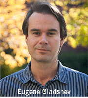

News Archives : 2013 : Thirteen MCB Post-Doctoral Fellows Receive Fellowships
December 17, 2013
Thirteen MCB post-doctoral researchers have been awarded post-doctoral fellowships from six different funding agencies.
David Gire (Murthy Lab), Florian Merkle (Schier and Eggan Labs), Andrea Pauli (Schier Lab), Melanie Samuel (Sanes Lab), and Arvind 'Rasi' Subramaniam (O’Shea Lab) received NIH Pathways to Independence Awards from different institutes within the National Institutes of Health. The awards are for the transition to independence and run for five years in total: two years of postdoctoral research and, pending another approval, salary for three years of faculty work as principal investigator in an institution of the researcher’s choice.
Jeffrey Farrell (Schier Lab) and Sarah Wacker (Losick Lab) received fellowships from the Jane Coffin Childs Memorial Fund for Medical Research. The fellowship provides a salary and research allowance for three years, plus a travel allowance.
Constance Richter (Schier Lab) and Alecia Septer (Gibbs Lab) received awards from the Life Sciences Research Foundation (LSRF) Postdoctoral Fellowship Program, which provides funding for three years.
Eugene Gladyshev (Kleckner Lab) and Fei Wang (Denic Lab) were each awarded a two-year fellowship from The Charles A. King Trust Postdoctoral Research Fellowship Program.
Michael Cianfrocco (Leschziner Lab and Reck-Peterson Lab in HMS) received a Howard Hughes Medical Institute (HHMI) Fellow Award for the Damon Runyon Cancer Research Foundation, which provides funding for three years, plus travel and computer expenses.
Timothy Sanchez (Needleman Lab) received a National Science Foundation (NSF) Postdoctoral Research Fellowship in Biology, which also provides a salary for three years plus a research and outreach allowance.
About The Research
Michael Cianfrocco (Leschziner Lab)
Fellowship: HHMI Fellow Award for the Damon Runyon Cancer Research Foundation
Project: How Does Dynein Achieve Processivity?
This fellowship will fund my postdoctoral research that is focused on studying how changes in protein structure can affect organelle transport within cells. In particular, I will be studying the structure and function of the molecular motor dynein and its interaction with a ubiquitous regulatory dynactin. Since many viruses require dynein to be transported from the cell membrane to the nucleus for genome replication, understanding the molecular details of dynein-dynactin function may provide novel targets to block viral transport.
Jeff Farrel (Schier Lab)
Fellowship: Jane Coffin Childs Memorial Fund
Project: Avoiding And Correcting Errors In Early Embryonic Patterning
A developing organism generates its many different kinds of adult cells from a single, fertilized egg. A central mystery of this process is how cells choose their distinct identities and become spatially organized relative to nearby cells that have different fates. I am studying how the vertebrate developmental program avoids and corrects errors in patterning and cell fate specification in early embryogenesis. Findings from this study can assist future regenerative therapies, where cell fates must be extensively manipulated.
David Gire (Murthy Lab)
Fellowship: NIH Pathways to Independence Award from the National Institute on Deafness and Other Communication Disorders (NIDCD)
Project: Neural Circuit Mechanisms Of Odor Localization In Mice
One of the primary functions of the brain is to process sensory input into a form that can guide the behavior of an animal within its environment. I am conducting a series of experiments to determine how bilateral processing in the olfactory system allows animals to find the source of odors. Defining these fundamental mechanisms of neural circuit processing will be instrumental for the understanding and treatment of disorders that alter sensory integration, such as schizophrenia and autism spectrum disorders.
 Eugene Gladyshev (Kleckner Lab)
Fellowship: Charles A. King Trust Postdoctoral Research Fellowship Program
Project: DNA Homology Sensing in the Absence of Double-Strand Breaks
In many organisms, including humans, genome repair and reproduction depend on the ability of two homologous (identical or nearly identical) DNA molecules to identify one another among millions of competing variants. Breaking both strands of one DNA molecule is required to initiate the known homology search mechanism. However, homologous DNA molecules appear also to have an intriguing capacity to pair in the absence of double-strand breaks. Using the fungus Neurospora crassa as a model system, I discovered that such break-independent sequence-specific association may proceed by having two DNA double helices interacting once per each helical turn, over many turns, where exactly three letters of DNA are involved in each interaction. I now propose to characterize factors involved in establishing and signaling the presence of paired DNA molecules.
Andrea Pauli (Schier Lab)
Fellowship: NIH Pathways to Independence Award from the Eunice Kennedy Shriver National Institute of Child Health and Human Development (NICHD).
Project: Functional Analysis Of Novel Signaling Peptides During Embryogenesis
Molecular and genetic studies carried out in the past 25 years have suggested that only a handful of signaling pathways regulate early developmental decisions. Contrary to this assertion, we have discovered several previously non-annotated signaling molecules expressed during embryogenesis including Toddler, a highly conserved but previously uncharacterized short secreted peptide that is essential for early embryogenesis. To provide novel insights into developmental signaling, I proposed to (1) characterize the developmental and molecular roles of Toddler and identify its receptor and (2) test the roles of several other novel secreted peptides expressed during early development.
Constance Richter (Schier Lab)
Fellowship: Simmons Fellow of the Life Sciences Research Foundation (LSRF)
Project: Peptidergic Regulation of Sleep and Wake In Zebrafish
The need for sleep is prevalent throughout the animal kingdom. However, the function of sleep remains elusive, and we lack a deep molecular understanding of sleep regulation. Peptidergic regulation of sleep is conserved in vertebrates. For instance, the neuropeptide hypocretin underlies the sleep disorder narcolepsy and promotes wake in fish and mammals. Using zebrafish, I aim to identify and characterize novel peptides that regulate sleep and wake.
Melanie Samuel (Sanes Lab):
Fellowship: NIH Pathways to Independence Award from the National Institute on Aging
Project: Molecular Mechanisms of Age-related Synaptic Disorganization
Along with wisdom, age brings many unpleasant alterations in neural function: memory declines, reflexes and mobility deteriorate, and the brain becomes more susceptible to disease. Although progress has been made in defining the pathogenesis of specific neurological diseases, the biological mechanisms responsible for healthy aging of the nervous system remain unknown. To address this problem, I have focused our studies on the aging of synapses. Synapses are the key elements of neural circuitry, and likely central to age-related neural decline. I aim to elucidate the molecular pathways that regulate synaptic aging in the central nervous system, determine the structural and functional impact of these changes and discover interventions that can reverse them.
Timothy Sanchez (Needleman Lab):
Fellowship: National Science Foundation (NSF) Postdoctoral Research Fellowship in Biology
Project: Determining Metabolic Effects On Mitotic Spindle Morphology And Chromosome Segregation
My research will pursue a fundamental understanding of the relationship between mitochondrial metabolism and chromosome segregation in C. elegans oocytes. Metabolic activity, spindle morphology, and chromosome segregation errors (CSEs) in oocytes will be simultaneously characterized in order to understand the extent to which mitochondrial metabolism determines spindle function and chromosome segregation. I am currently working to establish an assay for characterizing metabolic state using time-correlated single photon counting microscopy methods. I am also working toward a robust method of making biochemical perturbations to the worms' metabolism to see how this affects chromosome segregation.
Alecia Septer (Gibbs Lab)
Fellowship: Life Sciences Research Foundation Postdoctoral Fellowship
Project: Dissecting The Function Of A Self-Recognition Gene Cluster In The Bacterium Proteus mirabilis
In the Gibbs lab, we use interdisciplinary approaches to characterize the functional networks controlling self-recognition behavior in the model organism Proteus mirabilis. My research focuses on understanding how the idr gene cluster contributes to the territorial exclusion of nonself populations.
Avrvind ‘Rasi’ Subramaniam (O’Shea Lab)
Fellowship: NIH Pathways to Independence Award from the National Institute of General Medical Sciences (NIGMS)
Project: Gene Regulation By Synonymous Codons In Bacteria And Cancer Cells
My goal is to understand the role of synonymous substitutions in the regulation of protein expression. In previous research, I had found that certain synonymous codons can act as sensors of amino acid levels in bacteria. My current work under the mentorship of Erin O'Shea is aimed at deciphering the mechanistic basis of this observation, and extending it to mammalian cells. Existence of such a codon-based regulatory mechanism will imply a hidden layer of genetic information that is potentially common across all domains of life. Since I have also worked with Philippe Cluzel and Rich Losick on this research, I have particularly enjoyed the open and collaborative atmosphere in our MCB department.
Sarah Wacker (Losick Lab)
Fellowship: Jane Coffin Childs Memorial Fund for Medical Research
Project: Dissecting the Molecular Basis of Mutually Beneficial Interactions between plants And Bacteria
The soil bacterium Bacillus subtilis forms multicellular communities, called biofilms, on the roots of some plants, including tomatoes, resulting in increased plant growth. How tomato plants and B. subtilis communicate at a molecular level is not well understood. I plan to purify compounds from tomato roots that stimulate B. subtilis biofilm formation and characterize the bacterial targets that bind these compounds. In addition to illuminating mechanisms of mutualistic interspecies interactions, this research may increase our general understanding of the formation of biofilms, which are involved in many human infections.
Fei Wang (Denic Lab)
Fellowship: Charles A. King Trust Postdoctoral Research Fellowship Program
Project: The Mechanism of Tail-Anchored Membrane Protein Insertion into the Endoplasmic Reticulum
Tail-anchored (TA) proteins are membrane proteins with essential cellular functions. For example, most SNARE proteins that mediate vesicle fusion are TA proteins. The efficient and precise post-translational targeting of TA protein to Endoplasmic Reticulum (ER) is carried out by a conserved Guided Entry of Tail-anchored (GET) pathway. I use both genetic and biochemical approaches to dissect GET pathway, particularly to achieve a fuller mechanistic understanding of the insertion step.
About The Post-Doctoral Fellowship Programs
Damon Runyon Fellowship Award
The Damon Runyon Fellowship Award supports the training of the brightest postdoctoral scientists as they embark upon their research careers. This funding enables them to be trained by established investigators in leading research laboratories across the country. Damon Runyon Postdoctoral Research Fellowships are granted for a three-year term with second- and third-year funding contingent upon satisfactory progress reports. Fellows in their first- and third-years of funding will attend Damon Runyon Fellows' Retreats designed to foster collaboration and interaction between scientists working in different fields relevant to cancer.
Jane Coffin Childs Memorial Fund for Medical Research
Since its founding in 1937, the Fund has been committed to fundamental biological research and to free, unpressured, wide-ranging scientific inquiry in support of its central mission. In 1944, the Fellowship Program was initiated to provide support for promising researchers who had just received their doctorates. In 1976, the Fund initiated its Symposium program to inform and challenge the Fund’s fellows about problems in clinical medicine relating to cancer.
Life Sciences Research Foundation (LSRF) Postdoctoral Fellowship Program
In the belief that innovation and discovery occur in direct proportion to quality of training, the Life Sciences Research Foundation administers an international program of postdoctoral fellowships in all areas of the life sciences. Since it was established, in 1981, the Foundation has attracted support from a wide variety of sponsors. Each sponsor supports one or more designated individuals, chosen by the Foundation's Board on the basis of the merit of the proposed research and the quality of the individual's past performance, as judged by the Foundation's Peer Review Committee. In this way, the Foundation offers sponsors a personal, cost-effective way to support excellence in non-targeted biological research.
National Institutes of Health (NIH) Pathway to Independence Award ( K99/R00)
The primary purpose of the Pathway to Independence Award (K99/R00) program is to increase and maintain a strong cohort of new and talented NIH-supported independent investigators. The program is designed to facilitate a timely transition from a mentored postdoctoral research position to a stable independent research position with independent NIH or other independent research support at an earlier stage than is currently the norm.
National Science Foundation (NSF) Postdoctoral Research Fellowship in Biology
The fellowships encourage independence at an early stage of the research career to permit Fellows to pursue their research and training goals in the most appropriate research locations regardless of the availability of funding for the Fellows at that site. For FY 2013, these BIO programs are (1) Broadening Participation in Biology; (2) Intersections of Biology and Mathematical and Physical Sciences and Engineering; (3) National Plant Genome Initiative Postdoctoral Research Fellowships; and (4) International Postdoctoral Research Fellowships in Biology. These areas change periodically as new scientific and infrastructure opportunities present themselves.
The Charles A. King Trust Postdoctoral Research Fellowship Program
Established in 1936, the Charles A. King Trust was created to “support and promote the investigation of human disease and the alleviation of human suffering through improved treatment.” In keeping with these principles, the King Trust today supports postdoctoral fellows in the basic sciences and clinical/health services research. Each applicant must be working under the supervision of an established scientist who is the designated Mentor.